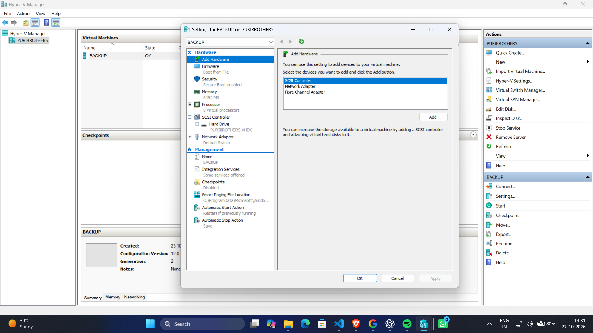
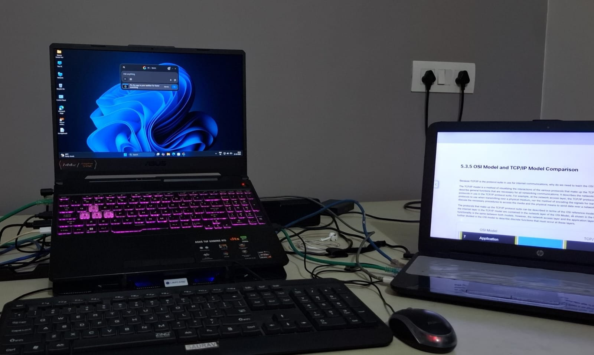
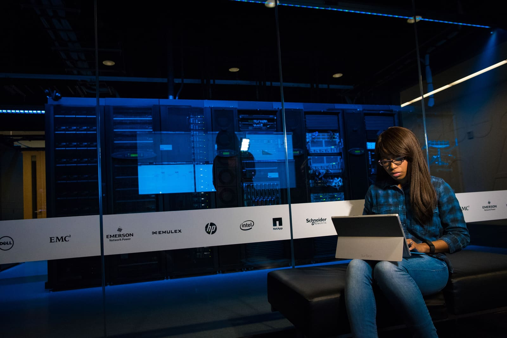
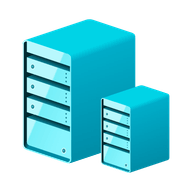
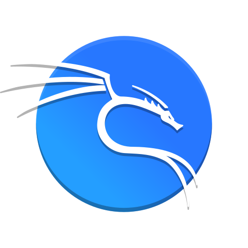

System Virtualization
Virtual machines, hypervisors, and computing environments designed for flexibility and efficient resource utilization.
DISCUSS YOUR REQUIREMENTS ↗IT INFRASTRUCTURE & SYSTEMS
Virtualization, networking, and system infrastructure designed for reliability, performance, and control.
WHAT WE DO
Building and supporting the systems that keep technology connected, virtualized, and running.

Virtual machines, hypervisors, and computing environments designed for flexibility and efficient resource utilization.
DISCUSS YOUR REQUIREMENTS ↗Network configuration, connectivity, and troubleshooting to help keep systems communicating reliably.
DISCUSS YOUR REQUIREMENTS ↗
Operating system administration, technical troubleshooting, and support for dependable computing environments.
DISCUSS YOUR REQUIREMENTS ↗ABOUT GEAI TECHNOLOGIES
Technology depends on the systems beneath it.
GEAI Technologies focuses on IT infrastructure, system virtualization, networking, and system administration to help create reliable and manageable computing environments.
AREAS OF FOCUS
PERFORMANCE.
CONTROL.
RELIABILITY.

GEAI / INFRASTRUCTURE 001TECHNOLOGY & PLATFORMS
Tools and platforms used across virtualization, networking, operating systems, and infrastructure.

Microsoft Hyper-V and VMware for virtual machines and flexible computing environments.

Networking

Security & Diagnostics

Windows & Windows Server
LET'S WORK TOGETHER
Let's discuss your IT infrastructure, virtualization, networking, or systems requirements.
GET IN TOUCH ↗